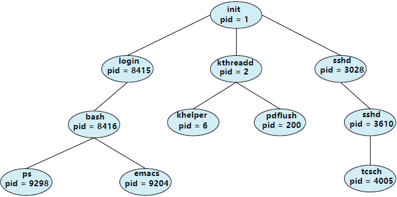
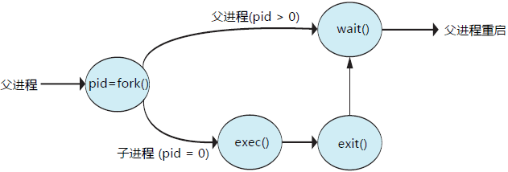
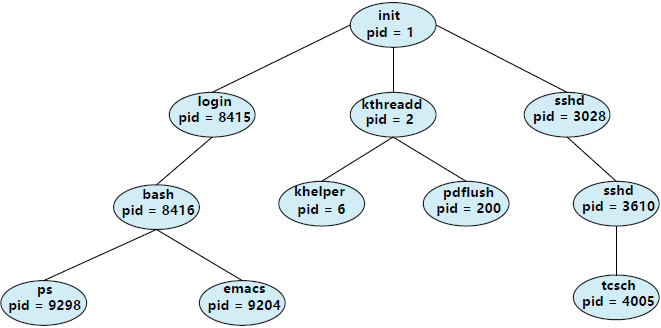
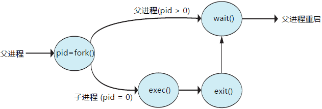

首页 > 编程笔记
进程的创建和终止（超详细）
大多数系统的进程能够并发执行，它们可以动态创建和删除。因此，操作系统必须提供机制，用于创建进程和终止进程。
大多数的操作系统（包括 UNIX、Linux 和 Windows）对进程的识别采用的是唯一的进程标识符（pid），pid 通常是一个整数值。系统内的每个进程都有一个唯一 pid，它可以用作索引，以便访问内核中的进程的各种属性。

图 1 典型Linux系统的一个进程树
图 1 显示了 Linux 操作系统的一个典型进程树，包括进程的名称和 pid（我们通常使用进程这个术语，不过 Linux 偏爱"任务"这个术语）。进程 init（它的 pid 总是 1），作为所有用户进程的根进程或父进程。一旦系统启动后，进程init可以创建各种用户进程，如 Web 服务器、打印服务器、ssh 服务器等。
在图 1 中，kthreadd 和 sshd 为 init 的两个子进程。kthreadd 进程负责创建额外进程，以便执行内核任务（这里为 khelper 和 pdflush）。sshd 进程负责管理通过 ssh 连到系统的客户端。login 进程负责管理直接登录到系统的客户端。在这个例子中，客户已登录，并且使用 bash 外壳，它所分配的 pid 为 8416。采用 bash 命令行界面，这个进程还创建了进程 ps 和 emacs 编辑器。
对于 UNIX 和 Linux 系统，我们可以通过 ps 命令得到一个进程列表。例如，命令
一般来说，当一个进程创建子进程时，该子进程需要一定的资源（CPU 时间、内存、文件、I/O 设备等）来完成任务。子进程可以从操作系统那里直接获得资源，也可以只从父进程那里获得资源子集。父进程可能要在子进程之间分配资源或共享资源（如内存或文件）。限制子进程只能使用父进程的资源，可以防止创建过多进程，导致系统超载。
除了提供各种物理和逻辑资源外，父进程也可能向子进程传递初始化数据（或输入）。例如，假设有一个进程，其功能是在终端屏幕上显示文件如 image.jpg 的状态。当该进程被创建时，它会从父进程处得到输入，即文件名称 image.jpg。通过这个名称，它会打开文件，进而写出内容。它也可以得到输出设备名称。另外，有的操作系统会向子进程传递资源。对于这种系统，新进程可得到两个打开文件，即 image.jpg 和终端设备，并且可以在这两者之间进行数据传输。
当进程创建新进程时，可有两种执行可能：
新进程的地址空间也有两种可能：
为了说明这些不同，首先看一看 UNIX 操作系统。在 UNIX 中，正如以前所述，每个进程都用一个唯一的整型进程标识符来标识。通过系统调用 fork()，可创建新进程。新进程的地址空间复制了原来进程的地址空间。这种机制允许父进程与子进程轻松通信。这两个进程（父和子）都继续执行处于系统调用 fork() 之后的指令，但有一点不同：对于新（子）进程，系统调用 fork() 的返回值为 0；而对于父进程，返回值为子进程的进程标识符（非零）。
通常，在系统调用 fork() 之后，有个进程使用系统调用 exec()，以用新程序来取代进程的内存空间。系统调用 exec() 加载二进制文件到内存中（破坏了包含系统调用 exec() 的原来程序的内存内容），并开始执行。采用这种方式，这两个进程能相互通信，并能按各自方法运行。父进程能够创建更多子进程，或者如果在子进程运行时没有什么可做，那么它采用系统调用 wait() 把自己移出就绪队列，直到子进程终止。因为调用 exec() 用新程序覆盖了进程的地址空间，所以调用 exec() 除非出现错误，不会返回控制。
通过系统调用 execlp()（这是系统调用 exec() 的一个版本），子进程采用 UNIX 命令 /bin/ls（用来列出目录清单）来覆盖其地址空间。通过系统调用 wait()，父进程等待子进程的完成。当子进程完成后（通过显示或隐式调用 exit()），父进程会从 wait() 调用处开始继续，并且结束时会调用系统调用 exit()。这可用图 2 表示。

图 2 通过系统调用 fork() 创建进程
当然，没有什么可以阻止子进程不调用 exec()，而是继续作为父进程的副本来执行。在这种情况下，父进程和子进程会并发执行，并采用同样的代码指令。由于子进程是父进程的一个副本，这两个进程都有各自的数据副本。
作为另一个例子，接下来看一看 Windows 的进程创建。进程创建采用 Windows API 函数 CreateProcess()，它类似于 fork()（这是父进程用于创建子进程的）。不过，fork() 让子进程继承了父进程的地址空间，而 CreateProcess() 在进程创建时要求将一个特定程序加载到子进程的地址空间。再者，fork() 不需要传递任何参数，而 CreateProcess() 需要传递至少 10 个参数。
传递给 CreateProcess() 的两个参数，为结构 STARTUPINFO 和 PROCESS-INFORMATION 的实例：
函数 CreateProcess() 的头两个参数是应用程序名称和命令行参数。如果应用程序名称为 NULL（这里就是 NULL），那么命令行参数指定了所要加载的应用程序。在这个例子中，加载的是 Microsoft Windows 的 mspaint.exe 应用程序。
除了这两个初始参数之外，这里使用系统默认参数来继承进程和线程句柄，并指定没有创建标志；另外，这里还使用了父进程的已有环境块和启动目录。最后，提供了两个指向程序刚开始时所创建的结构 STARTUPINFO 和 PROCESS_INFORMATION 的指针。
在 UNIX 系统调用例子中，父进程通过调用 wait() 系统调用等待子进程的完成；而在 Windows 中与此相当的是 WaitForSingleObject()，用于等待进程完成，它的参数指定了子进程的句柄即 pi.hProcess。一旦子进程退出，控制会从函数 WaitForSingleObject() 回到父进程。
在其他情况下也会出现进程终止。进程通过适当系统调用（如 Windows 的 Terminate-Process()），可以终止另一进程。通常，只有终止进程的父进程才能执行这一系统调用。否则，用户可以任意终止彼此的作业。记住，如果终止子进程，则父进程需要知道这些子进程的标识符。因此，当一个进程创建新进程时，新创建进程的标识符要传递到父进程。
父进程终止子进程的原因有很多，如：
有些系统不允许子进程在父进程已终止的情况下存在。对于这类系统，如果一个进程终止（正常或不正常），那么它的所有子进程也应终止。这种现象，称为级联终止，通常由操作系统来启动。
为了说明进程执行和终止，下面以 Linux 和 UNIX 系统为例：可以通过系统调用 exit() 来终止进程，还可以将退出状态作为参数来提供。
父进程可以通过系统调用 wait()，等待子进程的终止。系统调用 wait() 可以通过参数，让父进程获得子进程的退出状态；这个系统调用也返回终止子进程的标识符，这样父进程能够知道哪个子进程已经终止了：
所有进程终止时都会过渡到这种状态，但是一般而言僵尸只是短暂存在。一旦父进程调用了 wait()，僵尸进程的进程标识符和它在进程表中的条目就会释放。
如果父进程没有调用 wait() 就终止，以致于子进程成为孤儿进程，那么这会发生什么？Linux 和 UNIX 对这种情况的处理是：将 init 进程作为孤儿进程的父进程。进程 init 定期调用 wait()，以便收集任何孤儿进程的退出状态，并释放孤儿进程标识符和进程表条目。
进程创建
进程在执行过程中可能创建多个新的进程。创建进程称为父进程，而新的进程称为子进程。每个新进程可以再创建其他进程，从而形成进程树。大多数的操作系统（包括 UNIX、Linux 和 Windows）对进程的识别采用的是唯一的进程标识符（pid），pid 通常是一个整数值。系统内的每个进程都有一个唯一 pid，它可以用作索引，以便访问内核中的进程的各种属性。

图 1 典型Linux系统的一个进程树
图 1 显示了 Linux 操作系统的一个典型进程树，包括进程的名称和 pid（我们通常使用进程这个术语，不过 Linux 偏爱"任务"这个术语）。进程 init（它的 pid 总是 1），作为所有用户进程的根进程或父进程。一旦系统启动后，进程init可以创建各种用户进程，如 Web 服务器、打印服务器、ssh 服务器等。
在图 1 中，kthreadd 和 sshd 为 init 的两个子进程。kthreadd 进程负责创建额外进程，以便执行内核任务（这里为 khelper 和 pdflush）。sshd 进程负责管理通过 ssh 连到系统的客户端。login 进程负责管理直接登录到系统的客户端。在这个例子中，客户已登录，并且使用 bash 外壳，它所分配的 pid 为 8416。采用 bash 命令行界面，这个进程还创建了进程 ps 和 emacs 编辑器。
对于 UNIX 和 Linux 系统，我们可以通过 ps 命令得到一个进程列表。例如，命令
ps -el
可以列出系统中的所有当前活动进程的完整信息。通过递归跟踪父进程一直到进程 init，可以轻松构造类似图 1 所示的进程树。一般来说，当一个进程创建子进程时，该子进程需要一定的资源（CPU 时间、内存、文件、I/O 设备等）来完成任务。子进程可以从操作系统那里直接获得资源，也可以只从父进程那里获得资源子集。父进程可能要在子进程之间分配资源或共享资源（如内存或文件）。限制子进程只能使用父进程的资源，可以防止创建过多进程，导致系统超载。
除了提供各种物理和逻辑资源外，父进程也可能向子进程传递初始化数据（或输入）。例如，假设有一个进程，其功能是在终端屏幕上显示文件如 image.jpg 的状态。当该进程被创建时，它会从父进程处得到输入，即文件名称 image.jpg。通过这个名称，它会打开文件，进而写出内容。它也可以得到输出设备名称。另外，有的操作系统会向子进程传递资源。对于这种系统，新进程可得到两个打开文件，即 image.jpg 和终端设备，并且可以在这两者之间进行数据传输。
当进程创建新进程时，可有两种执行可能：
- 父进程与子进程并发执行。
- 父进程等待，直到某个或全部子进程执行完。
新进程的地址空间也有两种可能：
- 子进程是父进程的复制品（它具有与父进程同样的程序和数据）。
- 子进程加载另一个新程序。
为了说明这些不同，首先看一看 UNIX 操作系统。在 UNIX 中，正如以前所述，每个进程都用一个唯一的整型进程标识符来标识。通过系统调用 fork()，可创建新进程。新进程的地址空间复制了原来进程的地址空间。这种机制允许父进程与子进程轻松通信。这两个进程（父和子）都继续执行处于系统调用 fork() 之后的指令，但有一点不同：对于新（子）进程，系统调用 fork() 的返回值为 0；而对于父进程，返回值为子进程的进程标识符（非零）。
通常，在系统调用 fork() 之后，有个进程使用系统调用 exec()，以用新程序来取代进程的内存空间。系统调用 exec() 加载二进制文件到内存中（破坏了包含系统调用 exec() 的原来程序的内存内容），并开始执行。采用这种方式，这两个进程能相互通信，并能按各自方法运行。父进程能够创建更多子进程，或者如果在子进程运行时没有什么可做，那么它采用系统调用 wait() 把自己移出就绪队列，直到子进程终止。因为调用 exec() 用新程序覆盖了进程的地址空间，所以调用 exec() 除非出现错误，不会返回控制。
#include <sys/types.h>
#include <stdio.h>
#include <unistd.h>
int main()
{
pid_t pid;
/* fork a child process */
pid = fork();
if (pid < 0) { /* error occurred */\
fprintf(stderr, "Fork Failed");
return 1;
}
else if (pid == 0) { /* child process */
execlp("/bin/ls"，"ls"，NULL);
}
else { /* parent process */
/* parent will wait for the child to complete */
wait(NULL);
printf("Child Complete");
}
return 0;
}
以上所示的 C 程序说明了上述 UNIX 系统调用例子中。这里有两个不同进程，但运行同一程序。这两个进程的唯一差别是：子进程的 pid 值为0，而父进程的 pid 值大于0（实际上，它就是子进程的 pid）。子进程继承了父进程的权限、调度属性以及某些资源，诸如打开文件。通过系统调用 execlp()（这是系统调用 exec() 的一个版本），子进程采用 UNIX 命令 /bin/ls（用来列出目录清单）来覆盖其地址空间。通过系统调用 wait()，父进程等待子进程的完成。当子进程完成后（通过显示或隐式调用 exit()），父进程会从 wait() 调用处开始继续，并且结束时会调用系统调用 exit()。这可用图 2 表示。

图 2 通过系统调用 fork() 创建进程
当然，没有什么可以阻止子进程不调用 exec()，而是继续作为父进程的副本来执行。在这种情况下，父进程和子进程会并发执行，并采用同样的代码指令。由于子进程是父进程的一个副本，这两个进程都有各自的数据副本。
作为另一个例子，接下来看一看 Windows 的进程创建。进程创建采用 Windows API 函数 CreateProcess()，它类似于 fork()（这是父进程用于创建子进程的）。不过，fork() 让子进程继承了父进程的地址空间，而 CreateProcess() 在进程创建时要求将一个特定程序加载到子进程的地址空间。再者，fork() 不需要传递任何参数，而 CreateProcess() 需要传递至少 10 个参数。
#include <stdio.h>
#include <windows.h>
int main(VOID)
{
STARTUPINFO si;
PR0CESS_INF0RMATI0N pi;
/* allocate memory */
ZeroMemory(&si, sizeof(si));
si.cb = sizeof(si);
ZeroMemory(&pi， sizeof(pi));
/* create child process */
if (!CreateProcess(NULL, /* use command line */
"C: \\WIND0WS\\system32\\mspaint. exe" , /* command */ NULL, /* don，t inherit process handle */
NULL, /* don^ inherit thread handle */
FALSE, /* disable handle inheritance */
0, /* no creation flags */
NULL, /* use parentJs environment block */
NULL, /* use parent1s existing directory */
&si,
&pi))
{
fprintf (stderr, "Create Process Failed");
return -1;
}
/* parent will wait for the child to complete */
WaitForSingleObject(pi.hProcess,INFINITE);
printf("Child Complete");
/* close handles */
CloseHandle(pi.hProcess);
CloseHandle(pi.hThread);
}
以上所示的 C 程序演示了函数 CreateProcess()，它创建了一个子进程，并且加载了应用程序 mspaint.exe。这里选择了 10 个参数中的许多默认值来传递给 CreateProcess()。传递给 CreateProcess() 的两个参数，为结构 STARTUPINFO 和 PROCESS-INFORMATION 的实例：
- 结构 STARTUPINFO 指定新进程的许多特性，如窗口大小和外观、标准输入与输出的文件句柄等；
- 结构 PR0CESS_INF0RMATI0N 含新进程及其线程的句柄与标识符。
函数 CreateProcess() 的头两个参数是应用程序名称和命令行参数。如果应用程序名称为 NULL（这里就是 NULL），那么命令行参数指定了所要加载的应用程序。在这个例子中，加载的是 Microsoft Windows 的 mspaint.exe 应用程序。
除了这两个初始参数之外，这里使用系统默认参数来继承进程和线程句柄，并指定没有创建标志；另外，这里还使用了父进程的已有环境块和启动目录。最后，提供了两个指向程序刚开始时所创建的结构 STARTUPINFO 和 PROCESS_INFORMATION 的指针。
在 UNIX 系统调用例子中，父进程通过调用 wait() 系统调用等待子进程的完成；而在 Windows 中与此相当的是 WaitForSingleObject()，用于等待进程完成，它的参数指定了子进程的句柄即 pi.hProcess。一旦子进程退出，控制会从函数 WaitForSingleObject() 回到父进程。
进程终止
当进程完成执行最后语句并且通过系统调用 exit() 请求操作系统删除自身时，进程终止。这时，进程可以返回状态值（通常为整数）到父进程（通过系统调用 wait()）。所有进程资源，如物理和虚拟内存、打开文件和 I/O 缓冲区等，会由操作系统释放。在其他情况下也会出现进程终止。进程通过适当系统调用（如 Windows 的 Terminate-Process()），可以终止另一进程。通常，只有终止进程的父进程才能执行这一系统调用。否则，用户可以任意终止彼此的作业。记住，如果终止子进程，则父进程需要知道这些子进程的标识符。因此，当一个进程创建新进程时，新创建进程的标识符要传递到父进程。
父进程终止子进程的原因有很多，如：
- 子进程使用了超过它所分配的资源。（为判定是否发生这种情况，父进程应有一个机制，以检查子进程的状态）。
- 分配给子进程的任务，不再需要。
- 父进程正在退出，而且操作系统不允许无父进程的子进程继续执行。
有些系统不允许子进程在父进程已终止的情况下存在。对于这类系统，如果一个进程终止（正常或不正常），那么它的所有子进程也应终止。这种现象，称为级联终止，通常由操作系统来启动。
为了说明进程执行和终止，下面以 Linux 和 UNIX 系统为例：可以通过系统调用 exit() 来终止进程，还可以将退出状态作为参数来提供。
/* exit with status 1 */
exit(1);
父进程可以通过系统调用 wait()，等待子进程的终止。系统调用 wait() 可以通过参数，让父进程获得子进程的退出状态；这个系统调用也返回终止子进程的标识符，这样父进程能够知道哪个子进程已经终止了：
pid_t pid;
int status;
pid = wait(festatus);
所有进程终止时都会过渡到这种状态，但是一般而言僵尸只是短暂存在。一旦父进程调用了 wait()，僵尸进程的进程标识符和它在进程表中的条目就会释放。
如果父进程没有调用 wait() 就终止，以致于子进程成为孤儿进程，那么这会发生什么？Linux 和 UNIX 对这种情况的处理是：将 init 进程作为孤儿进程的父进程。进程 init 定期调用 wait()，以便收集任何孤儿进程的退出状态，并释放孤儿进程标识符和进程表条目。
关注公众号「站长严长生」，在手机上阅读所有教程，随时随地都能学习。内含一款搜索神器，免费下载全网书籍和视频。

微信扫码关注公众号